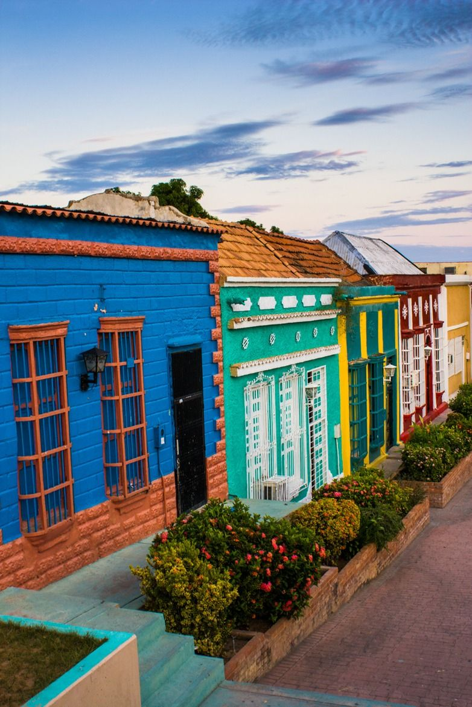

It's May and you're almost done with this school year.
You have 5 more years of free, compulsory education.

You rush home after school one day and press a cold compress on your mother's
forhead. She is suffering from pnuemonia and needs to see a doctor.
Your father is a brick layer, and you guys used to be pretty well off.
But with the inflation crisis money is becoming increasingly tight.
This week you had to choose between food for your family
and diapers for your sister or buying your mom medicine.
You chose the medicine, and have been eating mangoes for the past 2 days.
Your baby sister's diapers now consist of rags.
As you look upon your mothers face, you realize
how desperately she needs medical attention.Your father is going to
bring her to MSF as soon as he gets home.

MSF stands for Médecins Sans Frontières (Doctors Without Borders). They provide
free quality health care for more than 70 countries around the world.
When your father comes home he tells you that your family cannot live
like this any longer. He tells you that the crime has started to escalate in
your neighborhood, and with the hyperinflation, you would all be on the streets before
long. He tells you that as soon as your mother is strong enough, you were going to the USA in seek of asylum.